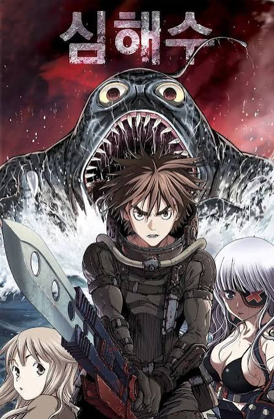

🥇 The Legend of the Northern Blade
Tags: Fantasy, Murim, Swordsmanship, Revenge
Chapter Count: 545 (Completed)
Author(s): Son Jae-Ho
Artist(s): Lee Kwang-su
For decades, the brave warriors of the Northern Army fought to keep the world safe from the evil Silent Night. But when the fourth-generation leader, Jin Kwan-Ho is accused of colluding with the enemy, he is forced to disband the sect and commit su*cide to protect his son, Jin Mu-Won. With no family and allies left, Mu-Won leads a dreary life under close surveillance… until a surprise attack from the Silent Night gives him a chance to escape to the mountains. There, the young warrior trains to master the fighting techniques of his predecessors, before the mysterious disappearance of a loved one brings him back to the mainland.
Read at:
WEBTOON
MANGADEX
RATINGS
Story: ⭐⭐⭐⭐⭐
Art: ⭐⭐⭐⭐⭐
Pacing: ⭐⭐⭐⭐⭐
Characters: ⭐⭐⭐⭐⭐
World-Building: ⭐⭐⭐⭐⭐
TOTAL: ⭐⭐⭐⭐⭐

🥈 Noblesse
Tags: Fantasy, Action, Superpowers, Slice of Life
Chapter Count: 53 (Completed)
Author(s): Park Taejun
Artist(s): Jeon Seonwook
The story revolves around the main protagonist Cadis Etrama Di Raizel and his loyal servant Frankenstein along with the human friends they meet as they oppose a secret human organization and while at the same time, uncovering more about Rai's past. The main setting for the story is Korea.
Read at:
WEBTOON
MANGADEX
RATINGS
Story: ⭐⭐⭐⭐⭐
Art: ⭐⭐⭐⭐⭐
Pacing: ⭐⭐⭐⭐
Characters: ⭐⭐⭐⭐⭐
World-Building: ⭐⭐⭐⭐⭐
TOTAL: ⭐⭐⭐⭐⭐

🥉 Solo Leveling
Tags: Fantasy, System, Gate, Dungeon
Chapter Count: 200 (Completed)
Author(s): Chu-Gong
Artist(s): Gi So-Ryeong, Jang Sung-Rak
In a world where hunters, human warriors who possess magical abilities, must battle deadly monsters to protect mankind from certain annihilation, a notoriously weak hunter named Sung Jinwoo finds himself in a seemingly endless struggle for survival. One day, after narrowly surviving an overwhelmingly powerful dungeon that nearly wipes out his entire party, a mysterious program called the System chooses him as its sole player and in turn, gives him the extremely rare ability to level up in strength, possibly beyond any known limits. Follow Jinwoo's journey as he fights against all kinds of enemies, both man and monster, to discover the secrets of the dungeons and the true source of his powers.
Read at:
WEBTOON
MANGADEX
RATINGS
Story: ⭐⭐⭐⭐⭐
Art: ⭐⭐⭐⭐⭐
Pacing: ⭐⭐⭐⭐⭐
Characters: ⭐⭐⭐⭐
World-Building: ⭐⭐⭐⭐
TOTAL: ⭐⭐⭐⭐⭐

🏅 Leviathan
Tags: Fantasy, Post-Apocalyptic
Chapter Count: 220 (Completed)
Author(s): Lee Gyuntak
Artist(s): Noh Miyoung
Taking place on a post-apocalyptic aquatic earth a century after a calamity rose the sea levels, Leviathan follows the adventures of siblings Bota and Lita after their father, Teon Ma, sacrificed his life to save them from a sea monster. The two are soon taken in by a woman called Kana, an acquaintance of their deceased father.
Read at:
WEBTOON
MANGADEX
RATINGS
Story: ⭐⭐⭐⭐⭐
Art: ⭐⭐⭐⭐
Pacing: ⭐⭐⭐⭐⭐
Characters: ⭐⭐⭐⭐
World-Building: ⭐⭐⭐⭐⭐
TOTAL: ⭐⭐⭐⭐⭐

🏅 A Returner's Magic Should Be Special
Tags: Fantasy, Magic Academy, Regression
Chapter Count: 269 (Completed)
Author(s): Usonan
Artist(s): Wookjakga
The world is on the brink of destruction after a devastating ten-year war in the “shadow labyrinth.” Desir Herrman is one of the last skilled magicians left standing, but even he is no match for the formidable foe threatening humanity's very existence. Just when he's certain the end has come, he is sent back in time to his early days of studying magic at the prestigious Hebrion Academy! With this rare second chance, Desir is determined to save not only himself but also the friends and comrades he once lost. Armed with the knowledge of what their future holds, can his efforts make a difference, or are they all doomed to relive the same terrible destiny?
Read at:
WEBTOON
MANGADEX
RATINGS
Story: ⭐⭐⭐⭐
Art: ⭐⭐⭐⭐⭐
Pacing: ⭐⭐⭐⭐
Characters: ⭐⭐⭐⭐
World-Building: ⭐⭐⭐⭐
TOTAL: ⭐⭐⭐⭐⭐